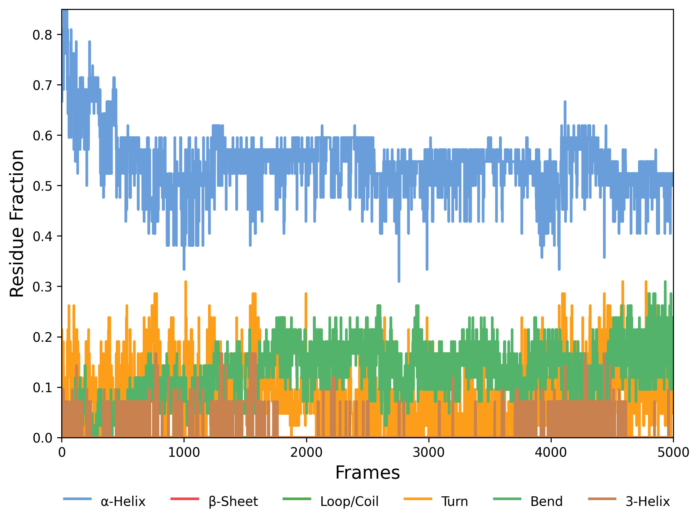

Secondary Structure Fraction
Overview
DynamiSpectra provides a comprehensive secondary structure analysis module tailored for molecular dynamics simulations. This module processes simulation data to quantify the fraction of each secondary structure type—such as α-helices, β-sheets, and loops—across all trajectory frames. The resulting time-resolved plots enable detailed visualization of secondary structure composition dynamics throughout the simulation.
Command line in GROMACS to generate .xvg files for the analysis:
gmx dssp -s Simulation.tpr -f Simulation.xtc -o ss.dat
def fractions_ss_analysis(file_path, output_folder, plot_config=None)

Interpretation guidance: The presented graph illustrates the temporal evolution of the fractions of residues adopting different secondary structure elements. Monitoring these fluctuations facilitates assessment of structural stability and conformational dynamics within the system. Consistent patterns may indicate stable folding, while variations can reveal conformational transitions or local instabilities. Comparative analysis across simulations aids in identifying reproducibility and the effects of differing initial conditions or parameters. Observed changes often correspond to the formation or disruption of critical structural motifs, thereby providing valuable insights into the molecular behavior under investigation.
Note: The .dat file contains raw data from the molecular dynamics simulation, classifying the secondary structure of each protein residue across all frames. The code reads this file and, for each frame, counts residues in each secondary structure type (e.g., α-helices, β-sheets, loops). It then calculates the fraction of each structure by dividing the count by the total number of residues. These fractions are plotted over time, showing how secondary structure proportions evolve during the simulation.
Complete code
import pandas as pd
import matplotlib.pyplot as plt
import os
def load_data(file_path):
"""
Loads the secondary structure .dat file into a DataFrame.
Parameters:
-----------
file_path : str
Path to the .dat file.
Returns:
--------
df : pd.DataFrame
DataFrame with one row per frame containing secondary structure string.
"""
try:
df = pd.read_csv(file_path, header=None)
print("First few rows of the file:")
print(df.head())
return df
except Exception as e:
print(f"Error loading the file: {e}")
return None
def calculate_fractions(df):
"""
Calculates the fraction of each secondary structure over time.
Parameters:
-----------
df : pd.DataFrame
DataFrame with one row per frame containing the structure string.
Returns:
--------
results_df : pd.DataFrame
DataFrame with fraction values for each structure type over time.
"""
time = []
helix_fraction = []
sheet_fraction = []
coil_fraction = []
turn_fraction = []
bend_fraction = []
three_helix_fraction = []
# Iterate over each time step (row)
for index, row in df.iterrows():
sequence = row[0]
total_residues = len(sequence)
# Calculate fraction of each structure
helix_fraction.append(sequence.count("H") / total_residues)
sheet_fraction.append(sequence.count("E") / total_residues)
coil_fraction.append(sequence.count("C") / total_residues)
turn_fraction.append(sequence.count("T") / total_residues)
bend_fraction.append(sequence.count("S") / total_residues)
three_helix_fraction.append(sequence.count("G") / total_residues)
time.append(index)
# Create DataFrame with results
results_df = pd.DataFrame({
"Time": time,
"Helix Fraction": helix_fraction,
"Sheet Fraction": sheet_fraction,
"Coil Fraction": coil_fraction,
"Turn Fraction": turn_fraction,
"Bend Fraction": bend_fraction,
"3-Helix Fraction": three_helix_fraction
})
print("First few rows of the results:")
print(results_df.head())
return results_df
def plot_results(results_df, output_folder, plot_config):
"""
Plots the fractions of each secondary structure type over time.
Parameters:
-----------
results_df : pd.DataFrame
DataFrame with computed fractions.
output_folder : str
Path to save the output plots and Excel file.
plot_config : dict
Dictionary with plot customization (title, labels, colors, etc).
"""
# Retrieve plot configuration
title = plot_config.get('title', 'Secondary Structure Fractions')
xlabel = plot_config.get('xlabel', 'Frames')
ylabel = plot_config.get('ylabel', 'Fraction of Residues')
figsize = plot_config.get('figsize', (7, 6))
fontsize = plot_config.get('fontsize', 12)
xlim = plot_config.get('xlim', None)
ylim = plot_config.get('ylim', (0, 0.85))
plt.figure(figsize=figsize)
# Plot each structure with distinct color and label
plt.plot(results_df["Time"], results_df["Helix Fraction"], label="α-Helix", color="#6A9EDA", linewidth=2)
plt.plot(results_df["Time"], results_df["Sheet Fraction"], label="β-Sheet", color="#f2444d", linewidth=2)
plt.plot(results_df["Time"], results_df["Coil Fraction"], label="Loop/Coil", color="#4bab44", linewidth=2)
plt.plot(results_df["Time"], results_df["Turn Fraction"], label="Turn", color="#fc9e19", linewidth=2)
plt.plot(results_df["Time"], results_df["Bend Fraction"], label="Bend", color="#54b36a", linewidth=2)
plt.plot(results_df["Time"], results_df["3-Helix Fraction"], label="3-Helix", color="#c9824f", linewidth=2)
# Set axis labels and title
plt.xlabel(xlabel, fontsize=fontsize)
plt.ylabel(ylabel, fontsize=fontsize)
plt.title(title)
plt.grid(False)
if xlim:
plt.xlim(xlim)
if ylim:
plt.ylim(ylim)
# Set legend at bottom center with multiple columns
plt.legend(loc="lower center", bbox_to_anchor=(0.5, -0.2), ncol=6, frameon=False,
markerscale=2, handlelength=2, handleheight=2)
# Create output folder if it doesn't exist
os.makedirs(output_folder, exist_ok=True)
# Save plots
png_path = os.path.join(output_folder, 'secondary_structure_fractions.png')
tiff_path = os.path.join(output_folder, 'secondary_structure_fractions.tiff')
plt.savefig(png_path, dpi=300, bbox_inches='tight')
plt.savefig(tiff_path, dpi=300, bbox_inches='tight')
plt.show()
# Save data to Excel
excel_path = os.path.join(output_folder, 'secondary_structure_fractions.xlsx')
results_df.to_excel(excel_path, index=False)
print(f"Excel file saved: {excel_path}")
def fractions_ss_analysis(file_path, output_folder, plot_config=None):
"""
Main function to perform secondary structure fraction analysis.
Parameters:
-----------
file_path : str
Path to the input .dat file with secondary structure data.
output_folder : str
Directory where plots and result files will be saved.
plot_config : dict, optional
Customization for the plot appearance:
- title, xlabel, ylabel
- figsize, fontsize
- xlim, ylim
"""
if plot_config is None:
plot_config = {}
df = load_data(file_path)
if df is not None:
results_df = calculate_fractions(df)
plot_results(results_df, output_folder, plot_config)